Unix网络编程——导论与三种协议
Unix网络编程 三大传输协议
协议简介
绝大多数客户/服务器网络应用使用TCP或UDP。
SCTP（流控制传输协议，Stream Control Transmission Protocol）是一个较新的协议，最初设计用于通过因特网传输电话信令。这些传输层协议都使用网络层协议IP（IPv4或IPv6）。尽管可以绕过传输层直接使用IPv4或IPv6，但这种原始套接字极少使用。
UDP是一个简单的、不可靠的数据报协议，而TCP是一个复杂、可靠的字节流协议。
SCTP也是一个可靠的协议，但它还提供消息边界、传输层级别的多宿支持（即一个主机同时使用多个网络接口地址（IP地址）与其他主机进行通信，多个路径通往同一服务器，提高传输的可靠性、性能和容错性）、将队头阻塞（队头阻塞是指当一个数据包在传输过程中发生丢失或延迟时，后续的数据包也会被阻塞，直到该数据包被重新传输或到达）减少到最小的方法。
虽然协议族被称为TCP/IP，但除了TCP和IP这两个主要协议外，还有许多其他成员：
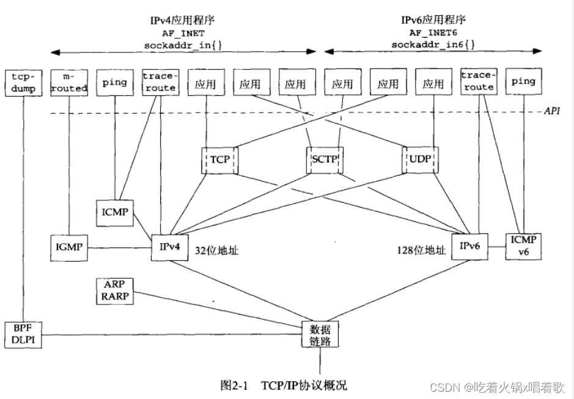
从右向左看上图，最右边5个网络应用在使用IPv6协议，随后的6个网络应用使用IPv4。
上图最左边的tcpdump网络应用或者使用BSD分组过滤器（BPF，BSD Packet Filter），或者使用数据链路提供者接口（DLPI，DataLink Provider Interface）直接与数据链路通信。上图中的应用下面的虚线为API，它通常是套接字或XTI（X/Open Transport Interface）。访问BPF或DLPI的接口不使用套接字或XTI（但Linux是例外，它使用SOCK_PACKET特殊套接字类型提供对数据链路的访问）。
上图中显示traceroute程序使用两种套接字，IP套接字（用于访问IP）和ICMP套接字（用于访问ICMP）。
上图中的每个协议框：
1.IPv4：网际协议版本4（Internet Protocol version 4），自20世纪80年代早期以来一直是网际协议族的主力协议。它使用32位地址。IPv4给TCP、UDP、SCTP、ICMP、IGMP提供分组递送服务。
2.IPv6：网际协议版本6，是在20世纪90年代中期作为IPv4的一个替代品设计的，其主要变化是使用128位地址以应对20世纪90年代因特网的爆发性增长。IPv6给TCP、UDP、SCTP、ICMPv6提供分组递送服务。
3.TCP：传输控制协议（Transmission Control Protocol）是面向连接的协议，为用户进程提供可靠的全双工字节流。TCP套接字是一种流套接字。TCP关心确认、超时、重传之类的细节。大多数因特网应用程序使用TCP。
4.UDP：用户数据报协议（User Datagram Protocol）是一个无连接协议，UDP套接字是一种数据报套接字（datagram socket）。UDP数据报不能保证最终到达它们的目的地。
5.SCTP：流传输控制协议（Stream Control Transmission Protocol）是一个提供可靠全双工关联的面向连接的协议，我们用关联一词指称SCTP中的连接，因为SCTP是多宿的，从而每个关联的两端均涉及一组IP地址和一个端口号。SCTP提供消息服务，即维护来自应用层的记录边界。与TCP和UDP一样，SCTP既可以使用IPv4，也可以使用IPv6，而且能在同一个关联中同时使用它们。
5.ICMP：网际控制消息协议（Internet Control Message Protocol）处理在路由器和主机之间流通的错误和控制消息。这些消息通常由TCP/IP网络支持软件（而非用户进程）产生和处理，但上图的ping和traceroute程序同样使用ICMP。有时我们称其为ICMPv4，以便与ICMPv6相区别。
6.IGMP：网际组管理协议（Internet Group Management Protocol）用于多播，它在IPv4中是可选的（但大多IPv4实现都支持多播）。
7.ARP：地址解析协议（Address Resolution Protocol）把一个IPv4地址映射成一个硬件地址（如以太网地址）。ARP常用于以太网、令牌环网、FDDI（Fiber Distributed Data Interface，光纤分布式数据接口）等广播网络，在点到点网络上并不需要。
8.RARP：反向地址解析协议（Reverse Address Resolution Protocol）把一个硬件地址映射成一个IPv4地址。它有时用于无盘节点的引导。
9.ICMPv6：网际控制消息协议版本6综合了ICMPv4、IGMP、ARP功能。
10.BPF：BSD分组过滤器，该接口提供对于数据链路层的访问能力，通常可以在源自Berkeley的内核中找到。
11.DLPI：数据链路提供者接口，该接口也提供对于数据链路层的访问能力，通常随SVR 4（System V Release 4）内核提供。
所有网际协议分别由一个或多个请求评注（Request For Comments，RFC）文档定义，这是它们的正式规范。
TCP UDP SCTP
我们使用术语IPv4/IPv6主机或双栈主机表示同时支持IPv4和IPv6的主机。
TCP/IP协议的细节参见TCPv1（TCP/IP详解 卷一：协议），TCP/IP在4.4 BSD上的实现参见TCPv2（TCP/IP详解 卷二：实现）。
RFC 768中说明了UDP。应用进程往一个UDP套接字写入一个消息，该消息随后被封装到一个UDP数据报，该UDP数据报又被封装到一个IP数据报，然后发送到目的地。UDP不保证UDP数据报会到达其最终目的地，不保证各个数据报的先后顺序跨网络后保持不变，也不保证每个数据报只到达一次。
使用UDP进行网络编程的问题是它缺乏可靠性，如果一个数据报到达了其最终目的地，但目的主机的UDP模块校验和检测发现错误，或该数据报在网络传输途中被丢弃了，它就无法被投递给UDP套接字，也不会被源端自动重传。如想确保一个数据报到达了目的地，可以往应用中添置一些特性：来自对端的确认、本端的超时与重传等。
每个UDP数据报都有一个长度，如果数据报正确到达其目的地，那么该数据报的长度将随数据一道传递给接收端应用进程。这一点不同于TCP，TCP是一个字节流协议，没有任何记录边界。
我们说UDP提供无连接服务，因为UDP客户与服务器之间不必存在任何长期的关系，例如，一个UDP客户可以创建一个套接字并发送一个数据报给一个服务器，然后立即用同一个套接字发送另一个数据报给另一个服务器。同样，一个UDP服务器可以用同一个UDP套接字从若干不同客户接收数据报。
TCP在RFC 793中说明，然后由RFC 1323、RFC 2581、RFC 2988、RFC 3390加以更新。TCP提供客户与服务器之间的连接，TCP客户先与某个给定服务器建立一个连接，再跨该连接与那个服务器交换数据，最后终止这个连接。
TCP还提供可靠性，当TCP向另一端发送数据时，它要求对端返回一个确认，如果没有收到确认，TCP就自动重传数据并等待更长时间，在数次重传失败后，TCP才放弃，如此在尝试发送数据上所花的总时间一般是4~10分钟（取决于实现）。
TCP并不保证数据一定被对端接收，TCP只是尽可能把数据送到对端，如果送不到会放弃重传并中断连接来通知本端用户，这么说来，TCP也不能被描述为100%可靠的协议，它提供的是数据的可靠递送或错误的可靠通知。
TCP有动态估算客户和服务器之间往返时间（RTT，Round-Trip Time）的算法，以便知道等待一个确认需要多少时间。RTT在一个局域网上大约几毫秒，跨越一个广域网则可能是数秒钟。另外，由于RTT受网络流通等各种变化因素影响，TCP会持续估算一个给定连接的RTT。
TCP通过给其中每个字节关联一个序号对发送的数据进行排序，如果一个应用写2048字节到一个TCP套接字，导致了TCP发送2个分节，第一个分节所含数据序号为1~1024，第二个分节所含数据序列号为1025~2048（分节是TCP传递给IP的数据单元），如果这些分节非顺序到达，接收端TCP将先根据它们的序列号重新排序，再把结果数据传递给应用。如果接收端TCP接收到来自对端的重复数据（如发送端认为一个分节已丢失并因此重传，而这个分节并没有真正丢失，只是网络通信过于拥挤），它可以根据序列号发现数据是重复的，从而丢弃重复数据。
UDP不提供可靠性，UDP不提供确认、序列号、RTT估算、超时和重传等机制。如果一个UDP数据报在网络中被复制（可能是由于网络拓扑结构（如主机的多个接口都在同一广播域，如果收到该广播域的广播时）、网络设备的传输错误或其他网络因素引起），两份副本就可能都递送到接收端主机。如果一个UDP客户发送两个数据报到同一个目的地，它们可能被网络重新排序，颠倒顺序后到达目的地。UDP应用必须处理所有这些情况。
TCP还提供流量控制，TCP总是告知对端它一次能够从对端接收多少字节的数据，这称为通告窗口。该窗口指出此刻接收缓冲区当前可用空间量，从而确保发送端发送的数据不会使接收缓冲区溢出。该窗口时刻动态变化，当接收到来自发送端的数据时，窗口大小就减小，当接收端应用从缓冲区中读取数据时，窗口大小就增大。通告窗口大小减小到0是可能的：TCP对应某个套接字的接收缓冲区已满，导致它必须等待应用从该缓冲区读取数据后，才能从对端再接收数据。
UDP不提供流量控制，让较快的UDP发送端以一个UDP接收端难以跟上的速率发送数据报是非常容易的。
TCP连接是全双工的，在一个给定的连接上应用可以在任何时刻既发送数据又接收数据。因此，TCP必须为每个数据流方向跟踪诸如序列号和通告窗口大小等状态信息。建立一个全双工连接后，需要的话可以将其转换成一个单工连接。
UDP可以是全双工的，具体取决于应用程序，UDP允许应用程序以任意的方式发送和接收数据报。
SCTP在RFC 2960中详细说明，并由RFC 3309加以更新。RFC 3286给出了SCTP的简要介绍。SCTP在客户和服务器之间提供关联，并像TCP那样给应用提供可靠性、排序、流量控制、全双工的数据传送。SCTP使用关联代替连接是由于：一个连接只涉及两个IP地址之间的通信；一个关联指两个系统之间的通信，它可能因为SCTP支持多宿而涉及不止两个地址。
SCTP是面向消息的，它提供各个记录的按序递送服务。与UDP一样，由发送端写入的每条记录长度随数据一道传递给接收端应用。
SCTP能在所连接的端点之间提供多个流，每个流各自可靠地按序递送消息。一个流上某个消息的丢失不会阻塞同一关联其他流上的消息的投递。而TCP在单一字节流中任何位置的字节丢失都将阻塞该连接上其后所有数据的递送，直到该丢失被修复。
SCTP提供多宿特性，单个SCTP端点能支持多个IP地址，可以增强应对网络故障的健壮性。一个端点可能有多个冗余的网络连接。当一个端点与另一个端点建立一个关联后，如果它的某个网络或某个跨越因特网的通路发生故障，SCTP可以通过切换到使用已与该关联相关的另一个地址来规避发生的故障。
BGP（边界网关协议，Border Gateway Protocol），是一种在互联网中用于交换路由信息的协议，它被用来确定数据包在互联网上的最佳路径，以便将它们从源主机发送到目标主机。BGP主要用于连接不同的自治系统（AS）。自治系统（AS）是指一组相互连接的网络，由一个或多个网络管理实体（例如互联网服务提供商、企业或组织）组成，在互联网架构中，自治系统是将一组IP地址块（IP地址前缀）和一组路由策略（自治系统内部定义的用于控制和管理路由流量的规则和策略）组合在一起的网络集合。每个自治系统被分配一个唯一的自治系统号（ASN），用于在全球范围内唯一标识该自治系统。以下是几个自治系统的例子：
1.互联网服务提供商（ISP）Verizon的自治系统，AS号为AS701，它是一个大型的自治系统，它拥有全球范围内的网络和多个数据中心。通过该自治系统，Verizon可以连接和提供服务给各种客户，包括企业、政府机构和个人用户。AS701的存在使得Verizon能够管理其网络流量、优化路由选择，并确保高效、可靠的通信服务。
2.包含多个办公地点或多分支的机构或校园网络的中型自治系统。这些自治系统可能由中等规模的企业、学校、大学或中型互联网服务提供商管理。
3.包含单个机构或小型企业或小型组织的小型自治系统。它们可能仅包含一个办公地点或一个局域网，并且连接的设备数量相对较少。这样的自治系统可能只需要几个IP地址块，并且使用较简单的路由协议进行内部路由交换。
iBGP（内部边界网关协议，Internal Border Gateway Protocol），是BGP协议的一种变种，用于在同一个自治系统（AS）内部的不同路由器之间交换路由信息。iBGP用于将从外部BGP邻居（即与其他自治系统之间建立的BGP连接）学到的路由信息传播给本地的内部BGP邻居（即AS内部的其他路由器）。使用iBGP，自治系统内的各个边界路由器可以共享路由信息（各个边界路由器并不需要邻接，只要有路由可达即可）。例如，有3个AS，AS1与AS2相连，AS2与AS3相连，而AS1和AS3之间相隔AS2，AS2有两个边界网关G1和G3，它们分别与AS1和AS3相连，这是典型的AS1和AS3是客户，而AS2是ISP的情形，如果AS1想向AS3发送消息，就要经过AS2，由于有iBGP，G1和G3的路由信息是共享的，这样G1就知道怎样到达AS3。
以上所说的SCTP的健壮性也可以在路由协议的辅助下从TCP中获得。由iBGP实现的同一域内的BGP连接（指使用iBGP可以让所有边界路由器共享路由信息）往往把赋予路由器的某个虚拟接口的多个地址用作TCP连接的端点，该域的路由协议确保域内两个路由器之间只要存在一条路由（即虚拟接口的多个地址中有一个可用），该连接可以使用，从而保证这两个边界路由器之间的BGP连接可用；要是使用属于某个物理接口的地址来建立BGP连接，该物理接口又不工作了，就不能做到这一点。SCTP的多宿特性允许主机（而不仅仅是路由器）也多宿，而且允许多宿跨越不同的服务供应商发生，这是基于路由的TCP多宿方法无法做到的。
三次握手
建立一个TCP连接时会发生：
1.服务器先准备好接受外来连接，这通常通过调用socket、bind、listen三个函数来完成，我们称其为被动打开。
2.客户通过调用connect发起主动打开，这导致客户TCP发送一个SYN（同步）分节，它告诉服务器客户将在待建立的连接中发送的数据的初始序列号。通常SYN分节不携带数据，其所在IP数据报只含有一个IP首部、一个TCP首部和可能有的若干个TCP选项。
3.服务器必须确认（ACK）客户的SYN，同时自己也得发送一个SYN分节，它含有服务器将在同一待建立连接中发送的数据的初始序列号。服务器在单个分节中发送SYN和对客户SYN的ACK。
4.客户必须确认服务器的SYN。
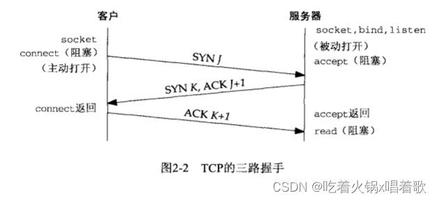
以上过程至少需要三个分组，因此称之为TCP的三路握手：
如上图，客户的初始序列号为J，服务器的初始序列号为K，ACK中的确认号是发送这个ACK的一端所期待的下一个序列号。因为SYN占据一个字节的空间，所以每一个SYN的ACK中的确认号就是该SYN的初始序列号加1。类似地，每一个FIN的ACK中的确认号为该FIN的序号加1。
建立TCP连接就好比一个电话系统，socket函数等同于有电话可用；bind函数在告诉别人你的电话号码，这样他们可以呼叫你；listen函数是打开电话振铃，这样有一个外来呼叫时，你可以听到；connect函数要求我们知道对方的电话号码并拨打它；accept函数发生在被呼叫人应答电话时。由accept函数返回客户的标识（即客户的IP地址和端口号）类似于让电话机的呼叫者ID功能部件显示呼叫者的电话号码，然而两者不同之处在于accept函数只在连接建立后返回客户的标识，而呼叫者ID功能部件却在我们选择应答或不应答电话前显示呼叫者电话号码。域名系统DNS，提供类似于电话簿的服务，getaddrinfo函数类似于在电话簿中查找某个人的电话号码，getnameinfo则类似有一本按照电话号码而非用户名排序的电话簿，这样就能通过电话号码查找用户名。
以下是常用TCP选项：
1.MSS选项：发送SYN的TCP一端使用此选项通告对端它的最大分节大小（MSS，Maximum Segment Size），即发送的一端在本连接的每个TCP分节中愿意接受的最大数据量。发送端TCP使用接收端MSS值作为所发送分节的最大大小。可使用TCP_MAXSEG套接字选项提取和设置这个TCP选项。
2.窗口规模选项：TCP连接任何一端能通告对端的最大窗口大小是65535，因为在TCP首部中相应字段占16位。然而如今因特网上已普及高速网络连接（45Mbit/s或更快）或长延迟路径（卫星链路），要求有更大的窗口以获得尽可能大的吞吐量。这个新选项指定TCP首部中的通告窗口扩大的位数（0~14），因此提供的最大窗口为1GB（65535 * 214）。套接字选项SO_RCVBUF可影响此TCP选项。为提供与不支持此选项的较早实现的互操作性，需应用以下规则：TCP可将该选项随主动打开的SYN发送，但只有在对端也随它的SYN发送该选项时，它才扩大自己的窗口规模。类似地，服务器的TCP只有接收到随客户的SYN到达的该选项时，才能发送该选项。本逻辑假定实现忽略它们不理解的选项，大多实现都会忽略，但无法保证所有实现都忽略。
3.时间戳选项：该选项对于高速网络连接是必要的，它可以防止失而复现的分组可能造成的数据破坏（高速网络中32位序列号短时间内就可能循环一轮重新使用，如不使用该选项，可能失而复现的分节会与再次使用相同序列号的真正分节发生混淆）。它是一个较新的选项，也以类似窗口规模选项的方式协商处理。作为网络编程人员，我们无需考虑这个选项。
大多TCP实现都支持这些常用选项，后两个选项也称RFC 1323选项，因为它们是在RFC 1323中说明的。既然高带宽或长延迟的网络（时延带宽积大）被称为长胖管道，这两个选项也称为长胖管道选项。
终止一个TCP连接需4个分节：
1.某个应用进程先调用close，我们称该端为主动关闭。该端的TCP于是发送一个FIN分节，表示发送完毕。
2.接收到这个FIN的对端执行被动关闭，接收到的这个FIN由TCP确认，一个文件结束符也会传递给接收端应用进程（放在该应用进程的接收缓冲区末尾），因为FIN的接收意味着接收端应用进程在相应连接上再无额外数据可接收。
3.一段时间后，接收到这个文件结束符的应用将调用close关闭它的套接字，这导致它的TCP也发送一个FIN。
4.接收这个最终FIN的原发送端TCP确认这个FIN。
以上过程通常是4个分节，以下情况例外：步骤1的FIN随数据一起发送；步骤2和步骤3发送的分节可能被合并成一个分节。
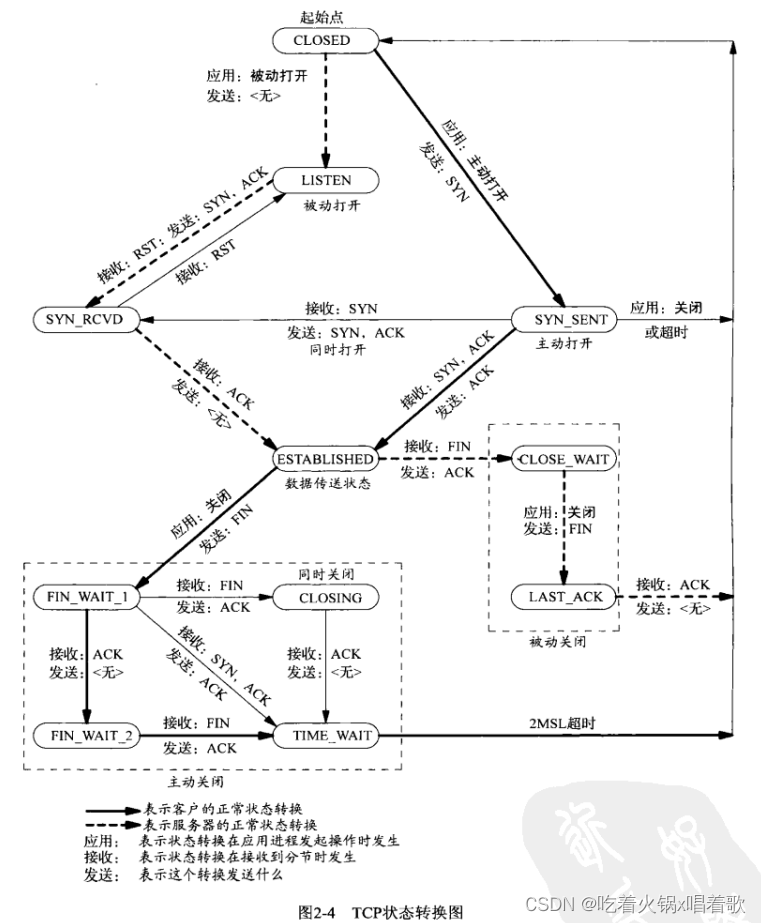
在步骤2和步骤3之间，从执行被动关闭端到执行主动关闭端进行数据流动是可能的，这称为半关闭。
一个Unix进程无论自愿地（调用exit或从main函数返回）还是非自愿地（收到一个终止本进程的信号）终止，所有打开的描述符都会关闭，会导致仍然打开的TCP连接上发出一个FIN。
无论是客户还是服务器都可以执行主动关闭，通常情况下是客户执行主动关闭，但某些协议（HTTP/1.0）由服务器执行主动关闭。
TCP涉及连接建立和连接终止的操作可以用状态转换图说明：
TCP为一个连接定义了11种状态，且TCP规定了如何基于当前状态及在该状态下所接收的分节从一个状态转换为另一个状态。如某应用在CLOSED状态下执行主动打开，TCP将发送一个SYN，进入新的状态SYN_SENT，如果这个TCP接着收到一个带ACK的SYN，它将发送一个ACK，进入新状态ESTABLISHED，ESTABLISHED状态是绝大多数数据传送发生的状态。
自ESTABLISH状态引出的两个箭头处理连接的终止，如果某个应用进程接收到一个FIN前调用close（主动关闭），则进入FIN_WAIT_1状态；如果某个进程在ESTABLISH状态期间接收到一个FIN（被动关闭），则进入CLOSE_WAIT状态。
上图用粗实线表示通常的客户状态转换，用粗虚线表示通常的服务器状态转换。上图还存在两个转换：同时打开（两端几乎同时发送SYN且这两个SYN在网络中交错）和同时关闭（两端几乎同时发送FIN），它们可能发生，但非常罕见。
netstat命令可显示连接处于以上11种TCP状态中的哪种。
完整的TCP连接所发生的实际分组交换情况，包括连接建立、数据传送、连接终止三阶段：
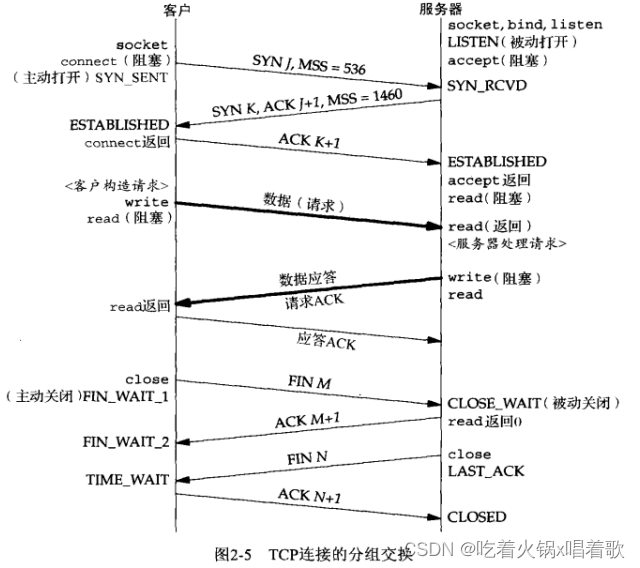
如上图，客户通告了一个值为536的MSS，表明客户只实现了最小重组缓冲区大小（ipv4为576字节，减去20字节的TCP首部和20字节的IP首部），而服务器通告了一个值为1460的MSS（以太网上的典型IPv4值）。两个方向上的MSS允许不同。
上图我们假设客户的请求可在单个TCP分节中发送（即请求大小小于服务器通告的1460字节），服务器处理该请求并发送一个应答，我们也假设了应答的大小小于536字节，且服务器对客户请求的确认是伴随其应答发送的，这称为捎带，它通常在服务器处理请求并产生应答的时间少于延迟确认的时间时发生，如果服务器耗用更长时间，我们将看到先确认后应答。
执行主动关闭的一端会进入TIME_WAIT状态。
上图中，仅仅是发送一个单分节的请求和接收一个单分节的应答，使用TCP有8个分节的开销，如果改用UDP，只需交换两个分组。然而从TCP切换到UDP将丧失TCP提供给应用进程的全部可靠性，迫使可靠服务的细节从传输层TCP转移到UDP应用进程。TCP提供的拥塞控制也必须由UDP应用进程来处理。尽管如此，很多网络应用是用UDP的，因为这些应用交换的数据量较少，UDP避免了TCP连接建立和终止所需的开销。
停留在TIME_WAIT状态的时长是最长分节生命期（MSL，Maximum Segment Lifetime）的两倍，有时称之为2MSL。
任何TCP实现都要为MSL选择一个值，RFC 1122的建议值是2分钟，但源自Berkeley的实现取值为30秒，这意味着TIME_WAIT状态的持续时间在1分钟到4分钟之间。MSL是任何IP数据报能在因特网中存活的最长时间，这个时间是有限的，因为每个数据报都有一个称为跳限（hop limit）的8位字段，它的最大值为255，尽管这是一个跳数限制而非真正时间限制，我们仍假设具有最大跳限255的分组在网络中存在的时间不可能超过MSL秒。
分组在网络中迷途通常是路由异常的结果，某个路由器崩溃或两个路由器间的链路断开时，路由协议会花数秒到数分钟时间才能稳定找出另一条通路，这段时间内可能发生路由循环（路由器A把分组发给路由器B，而B又将其发给A）。假设迷途的分组是一个TCP分节，在它迷途期间，发送端TCP超时并重传该分组，而重传分组通过某条候选路径到达目的地，不久后（自迷途分组开始其旅程起最多MSL秒内）路由循环恢复，早先迷失在循环中的分组最终也被送到目的地，这个原来的分组称为迷途的重复分组或漫游的重复分组。TCP必须正确处理这些分组。
TIME_WAIT状态存在的理由：
1.可靠地实现TCP全双工连接的终止。当被动关闭的一端发送了FIN后，主动关闭端会发送最终的ACK，如果这个ACK丢失了，被动关闭端会重发这个FIN。如果主动关闭端不维护状态信息，再次收到FIN后，将响应一个RST，该分节将被被动关闭端解释为一个错误。如果TCP打算执行所有必要的工作以彻底终止某个连接上两个方向的数据流（即全双工关闭），它必须正确处理连接终止序列4个分节中任何一个丢失的情况。这也说明了为什么主动关闭的一端才需要TIME_WAIT状态，因为要重传最后一个FIN的ACK。
2.允许老的重复分节在网络中消逝。我们假设在12.106.32.254的1500端口和206.168.112.219的21端口之间有一个TCP连接，我们关闭这个连接，一段时间后在相同IP和端口间建立另一个连接。后一个连接称为前一个连接的化身，因为它们的IP和端口号都相同。TCP必须防止来自某连接的老的重复分组在该连接已终止后再现，从而被误解成属于同一连接的某个新的化身，为此，TCP将不给处于TIME_WAIT状态的连接发起新的化身。TIME_WAIT状态持续时间是MSL的2倍，这足以让某方向上的分组存活MSL秒后被丢弃，另一个方向上的应答最多存活MSL秒也被丢弃。
以上第二点有一个例外，如果处于TIME_WAIT状态时，接收到SYN序号大于前一化身的结束序列号，源自Berkeley的实现将无需等待TIME_WAIT状态结束就启动新的化身。它要求服务器执行主动关闭，因为接收第一个SYN的一端需要处于TIME_WAIT状态。
SCTP也是面向连接的，因此也有关联的建立与终止的握手过程。
SCTP关联时的过程：
1.服务器必须准备好接受外来关联，通常通过调用socket、bind、listen完成，称为被动打开。
2.客户通过调用connect或发送一个隐式打开该关联的消息进行主动打开。这使得客户SCTP发送一个INIT消息（表示初始化），该消息告诉服务器客户的IP地址清单、初始序列号（用于数据包排序和流控制）、用于识别此关联中所有数据包的初始化标签（initiation tag，每个关联都有自己唯一的初始化标签，且会用于每个SCTP包中，作用是识别前一个关联中的过期的包）、客户请求的外出流的数目、客户能够支持的外来流的数目。
3.服务器以一个INIT ACK确认客户的INIT消息，其中包含服务器的IP地址清单、初始序列号、初始化标签、服务器请求的外出流数目、服务器能支持的外来流数目、一个状态cookie。状态cookie包含服务器用于确信本关联有效所需的所有状态，它是数字化签名过的（指使用非对称加密算法对数据进行加密哈希处理以确保数据的完整性和验证身份的过程），以确保有效性。
4.客户把一个COOKIE ECHO消息发到服务器，其中包含第3步中服务器发送的状态cookie，该消息可能在同一个分组中捆绑了用户数据。
5.服务器以一个COOKIE ACK消息确认客户回射的cookie是正确的，本关联于是确立，该消息可能在同一个分组中捆绑了用户数据。
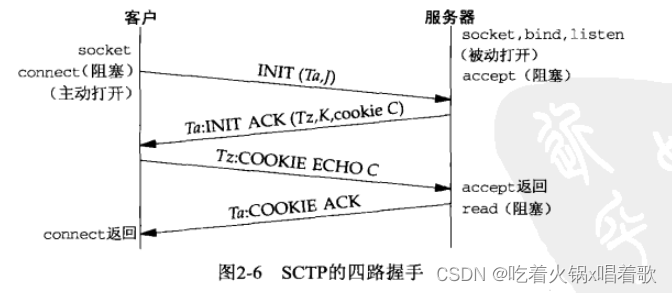
上图中，客户的INIT中包含一个验证标记Ta和一个初始序列号J以及其他众多参数，在关联有效期内，验证标记必须在服务器发送的每个分组中出现。初始序列号J用作承载用户数据的DATA块的起始序列号。服务器也在INIT ACK中承载一个验证标记Tz，关联有效期内，验证标记Tz也必须在客户发送的每个分组中出现。cookie中包含设置本SCTP关联所需的所有信息，这样服务器SCTP栈就不必保存所关联客户的有关信息。
四路握手结束时，两端会各自选择一个主目的地址，当不存在网络故障时，主目的地址将用作数据要发送到的默认目的地。
TCP中的SYN洪泛攻击是指，攻击者向目标服务器发送大量的伪造源IP地址的TCP连接请求（SYN包），但不完成握手过程，从而消耗服务器的资源，导致服务器无法处理正常的连接请求。在TCP中，SYN洪泛攻击是一种常见的DoS（Denial of Service，拒绝服务）攻击方式。
SCTP使用cookie的四路握手形成了一种防护以上TCP的拒绝服务攻击的方法，即在第一次握手过程中，服务器不会为每个收到的INIT报文都创建一个连接状态，而是生成一个Cookie作为回应，该Cookie包含了客户端的信息和服务器的状态，并且只有在客户端发送合法的COOKIE ECHO报文时，服务器才会将其解析并创建连接状态，这种Cookie机制的好处是，服务器可以在不创建连接状态的情况下，有效地抵御大规模的SYN洪泛攻击。因为服务器只需要验证COOKIE ECHO报文是否合法，而无需为每个未完成的连接请求消耗资源。TCP的许多实现也用类似的方法（SYN cookie，不是TCP标准中的内容，用的较少），区别在于，TCP中cookie状态必须编码到只有32位长的初始序列号中，SCTP为此提供了一个任意长的字段，并且要求实施基于加密的安全性以防护攻击。
SCTP不允许TCP那样的半关闭，当一端关闭某个关联时，另一端必须停止发送新数据。关联关闭请求的接收端发送完已经排队的数据（如果有）后，完成关联的关闭。
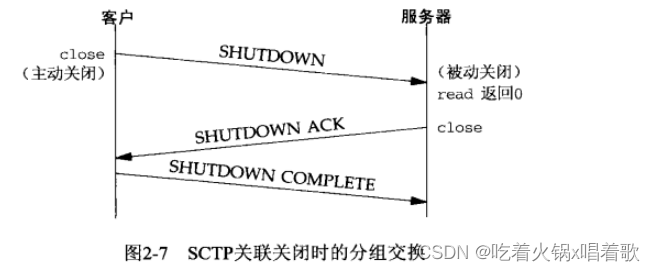
SCTP没有类似于TCP的TIME_WAIT状态，因为SCTP使用了验证标记，所有后续块所在的SCTP分组的公共首部中都有来自初始INIT块和INIT ACK块中作为起始标记交换的验证标记。来自旧连接的块所在的SCTP分组的公共首部携带的验证标记对于新连接来说是不正确的。
SCTP状态转换图：
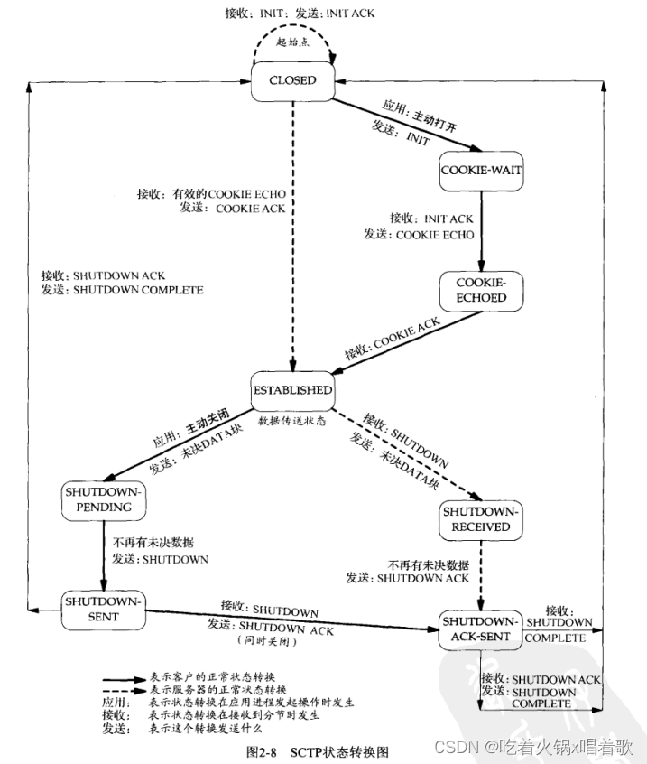
如上图，本状态机（一个状态机由一组状态和状态之间的转换组成）中从一个状态到另一个状态的转换由SCTP规则基于当前状态及在该状态下所接收的块规定。当某个应用进程在CLOSED状态下执行主动打开时，会发送一个INIT，进入状态COOKIE_WAIT，接着如果收到一个INIT ACK，它将发送一个COOKIE ECHO，进入状态COOKIE-ECHOED，随后收到一个COOKIE ACK时，进入状态ESTABLISHED。ESTABLISHED状态是绝大多数数据传送发生的状态，有些DATA块也可以由COOKIE ECHO块或COOKIE ACK块所在消息捆绑捎带。
上图中，从ESTABLISHED状态引出两个箭头处理关联的终止。如果某应用进程在接收到一个SHUTDOWN前调用close，就转换到SHUTDOWN-PENDING状态；如果某进程在ESTABLISHED状态期间收到一个SHUTDOWN，就转换到SHUTDOWN-RECEIVED状态。
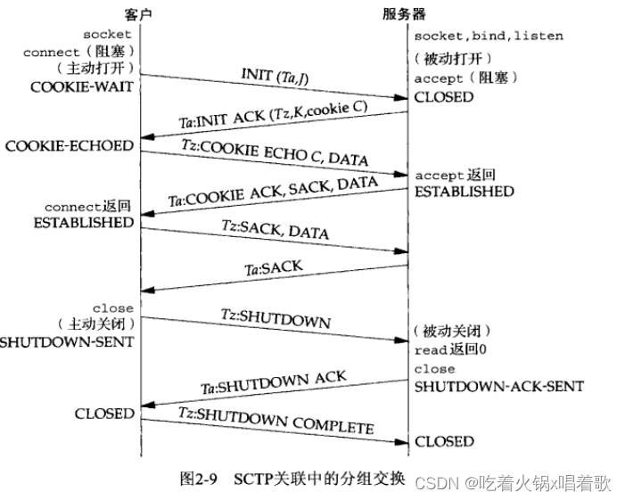
上图中，客户在COOKIE ECHO块所在分组中捎带了它的第一个DATA块，服务器在作为应答的COOKIE ACK块所在分组中捎带了数据。一般，当网络应用采用一到多接口式样时，COOKIE ECHO通常捎带一个或多个DATA块。
SCTP分组中信息的单位称为块。块是自描述的，包含一个块类型、若干个块标记、一个块长度。这样方便了多个块的绑缚，只要把它们简单地组合到一个SCTP外出消息中。
SCTP使用参数和块来方便增设可选特性，新特性通过添加这两个条目之一加以定义，并允许通常的SCTP处理规则汇报未知的参数和未知的块。参数类型和块类型的高两位指明SCTP接收端该如何处置未知的参数或未知的块。
当前如下两个对SCTP的扩展正在开发中：
1.动态地址扩展：允许协作的SCTP端点从已有的某个关联中动态增删IP地址。
2.不完全可靠性扩展：允许协作的SCTP端点在应用进程指导下限制数据的重传，当一个消息变得陈旧而无需发送时（由应用进程指导），该消息被跳过而不再被发到对端。这意味着不是所有数据都确保到达关联的另一端。
端口划分
TCP、UDP、SCTP这三种协议都使用16位整数的端口号来区分进程。
TCP、UDP、SCTP定义了一组众所周知端口，用于标识众所周知的服务，如支持FTP的任何TCP/IP实现都把端口21作为众所周知端口分配给FTP服务器。分配给简单文件传送协议（FTFP，Trivial File Transfer Protocol）的UDP端口号是69。
客户通常使用短期有效的临时端口，这些端口号通常由传输层协议自动赋予客户，客户通常不关心端口的具体值，只需确认该端口在所在主机中是唯一的即可。传输协议的代码确保这种唯一性。
IANA（因特网已分配数值权威机构，the Internet Assigned Numbers Authority）维护着一个众所周知端口号分配的清单，该清单作为RFC多次发布，RFC 1700是这个系列最后一个。
端口号被划分为以下3段：
1.众所周知端口0~1023：这些端口由IANA分配和控制。可能的话，相同端口号就分配给TCP、UDP、SCTP的同一给定服务，如不论TCP还是UDP端口号80都被赋予web服务器（http服务），尽管它的目前所有实现都单纯使用TCP。端口号80分配时SCTP尚不存在，新分配的端口将针对这三种协议执行，RFC 2960声明所有现有的TCP端口号对于使用SCTP的同一服务同样有效。
2.已登记的端口1024~49151：这些端口不受IANA控制，但由IANA登记并提供它们的使用清单，可能的话，相同端口号也分配给TCP和UDP的同一给定服务，如6000~6063分配给这两种协议的X Window服务器，尽管它的所有实现当前单纯使用TCP。上限49151是为了给临时端口留出范围。
3.动态端口或私有端口49152~65535：IANA不管这些端口，它是我们所称的临时端口。49152是65536的四分之三。
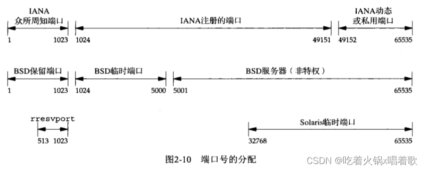
对于上图需注意以下几点：
Unix系统保留端口（reserved port）指的是小于1024的端口，这些端口只能赋予特权用户进程的套接字。所有IANA众所周知端口都是保留端口，使用这些端口的服务器必须以超级用户特权启动。
由于历史原因，源自伯克利的实现从BSD 4.3开始曾在1024~5000范围内分配临时端口，这在20世纪80年代初始可行的，但如今很容易找到同时支持多于3977个连接的主机，于是许多较新系统从另外的范围分配临时端口以提供更多临时端口，它们或者使用IANA定义的临时端口范围，或者使用一个更大的其他范围（如上图的Solaris）。由于这个原因许多较早系统的临时端口上限为5000，后来发现5000这一上限是一个排版错误，本应是50000。
有少数客户需要一个保留端口用于客户/服务器认证，如rlogin和rsh客户，这些客户调用库函数rresvport创建一个TCP套接字，并赋予它一个在513~1023范围内未使用的端口，该函数通常先尝试绑定1023，若失败尝试1022，依次类推，直到在端口513。
BSD的保留端口和rresvport函数返回的端口都跟IANA众所周知端口有所重叠，这是因为IANA众所周知端口早先上限为255，1992年的RFC 1340开始在256~1023之间分配众所周知端口。1990年的RFC 1060称256~1023之间的端口是Unix标准服务。20世纪80年代不少源自Berkeley的服务器在512以后挑选它们的众所周知端口，留下了256~511这个空档。
一个TCP连接的套接字对指定义该连接的两个端点的四元组：本地IP地址、本地TCP端口号、外地IP地址、外地TCP端口号。套接字对唯一标识一个网络上的每个TCP连接。SCTP一个关联由一组本地IP地址、一个本地端口、一组外地IP地址、一个外地端口标识，在两个端点均非多宿的情况下，SCTP与TCP所用的四元组一致，在某个关联任何一端多宿时，同一关联需要多个四元组标识（这些四元组的多宿一端的IP各不相同，但端口号都是一样的）。
标识每个端点的两个值（IP地址和端口号）通常称为一个套接字。我们可以把套接字的概念扩展到UDP，即使UDP是无连接的。
并发服务器中主服务器循环通过派生一个子进程来处理每个新的连接，子进程可以继续使用服务器众所周知端口来服务一个长时间请求。可能发生以下序列：首先，在主机freebsd上启动服务器，该主机是多宿的，其IP地址为12.106.32.254和192.168.42.1，服务器在众所周知端口21上执行被动打开，从而等待客户请求，如图：
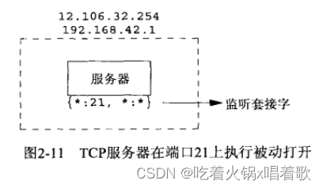
上图中:21, \:*指出服务器的套接字对，服务器在任意本地接口的端口21上等待连接请求，外地IP地址和外地端口都没有指定。我们称它为监听套接字。
以上指定本地IP地址的星号称为通配符，如果运行服务器的主机是多宿的，服务器可以指定它只接受到达某个本地接口的外来连接，这里要么选一个接口要么选任意接口。通配地址通过将套接字地址结构中的IP地址字段设为INADDR_ANY指定。
在206.168.112.219主机上启动一个客户，它对服务器的IP地址之一12.106.32.254指定主动打开，我们假设本例的客户主机TCP选择的临时端口为1500：当服务器接收并接受这个客户的连接时，它fork一个自身的副本，让子进程来处理该客户的请求。
至此，我们要在服务器主机上区分监听套接字和已连接套接字，这两个套接字都使用相同本地端口21。在多宿主机上，连接一旦建立，已连接套接字的本地地址12.106.32.254随即填入四元组：
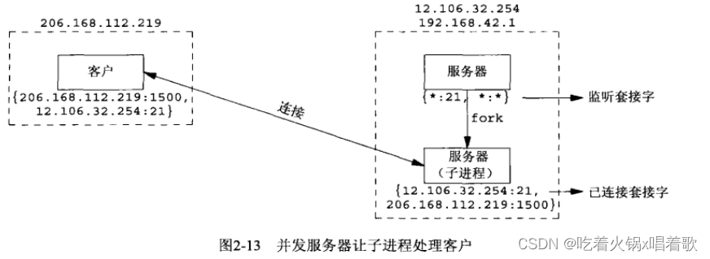
下一步假设在客户主机上另有一个客户请求连接到同一服务器。客户主机的TCP为新客户的套接字分配一个未使用的临时端口，假设是1501：
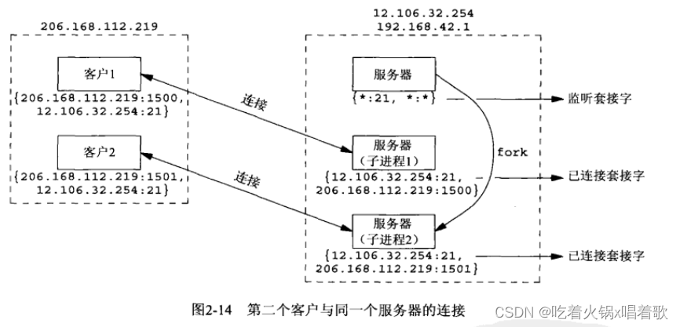
上图中，服务器上这两个连接是有区别的，第一个连接的套接字对和第二个连接的套接字对不一样。
通过上例可知，TCP无法仅仅通过查看目的端口号来决定把TCP报文递交给哪个套接字，必须查看套接字对的所有4个元素才能确定由哪个端点接收某个到达的分节。上图中同一端口21存在3个套接字，如果一个分节来自206.168.112.219:1500，目的地为12.106.32.254:21，它就被递送给第一个子进程；如果一个分节来自206.168.112.219:1501，目的地为12.106.32.254:21，它就被递送给第二个子进程。所有目的端口为21的其他TCP分节都被递送给拥有监听套接字的服务器父进程。
影响IP数据报大小的限制：
IPv4数据报的最大大小是65535字节，包括IPv4首部，这是因为IPv4首部总长度字段是16位。
IPv6数据报的最大大小是65575字节，包括40字节的IPv6首部，这是因为IPv6净荷长度字段（不包括IPv6首部）是16位，加上40字节的首部，即65575字节。IPv6有一个特大净荷选项，它把净荷长度字段扩展到32位，但这个选项需要MTU（最大传输单元，Maximum Transmiision Unit）超过65535的数据链路提供支持。
许多网络有可由硬件规定的MTU，如以太网MTU为1500字节；一些链路（如使用PPP协议的点到点链路）其MTU可人为配置；较老的SLIP链路通常使用1006字节或296字节的MTU。IPv4要求的最小链路MTU是68字节，这允许最大的IPv4首部（包括20字节的固定长度、最多40字节选项）和最小的拼接片段（IPv4首部中片偏移字段以8个字节为单位，片偏移字段含义为每个分片相对于原始报文开头的偏移量，即每个分片的长度必须是8字节的整数倍）。IPv6要求的最小链路MTU为1280字节，IPv6可运行在MTU小于此值的链路上，不过需要链路的分片和重组功能，以使得这些链路看起来至少有1280字节。
两个主机之间的路径中最小的MTU称为路径MTU。1500字节的以太网MTU是当今常见的路径MTU。两个主机间相反的两个方向上路径MTU可以不一致，因为因特网中路由选择往往是不对称的。
当一个IP数据报从某个接口送出时，如果它的大小超过相应链路的MTU，IPv4和IPv6都将执行分片，这些片段到达最终目的地前通常不会重组。IPv4主机对其产生的数据报执行分片，IPv4路由器对其转发的数据报执行分片；然而IPv6只有主机对其产生的数据报执行分片，IPv6路由器不对其转发的数据报执行分片。一个标记为IPv6的路由器设备可能执行分片，不过只是对于由它产生的那些数据报，此时该设备实际作为主机运作，如大多路由器支持telnet协议，管理员用它来配置路由器，由路由器的telnet服务器产生的IP数据报是由路由器产生的，而不是由路由器转发的。IPv4首部有用于处理分片的字段，而IPv6首部没有类似字段，既然分片是例外而非通常情况，IPv6于是引入一个可选首部以提供分片信息。某些通常用作路由器的防火墙可能会重组分片了的分组，以便查看整个IP数据报的内容，这样使得不必在防火墙上引入额外的复杂性就能防止某些攻击，它还要求防火墙设备是进出网络的唯一路径上的设备。
IPv4首部的不分片位（DF位，don’t fragment）若被设置，那么无论是主机还是路由器都不允许对它分片。当路由器接收到一个超过其外出链路MTU大小且设置了DF位的IPv4数据报时，它将产生一个ICMPv4目的地不可达出错消息。由于IPv6路由器不执行分片，每个IPv6于是隐含一个DF位，当IPv6收到一个超过其外出链路MTU大小的IPv6数据报时，它产生一个ICMPv6分组太大出错消息。IPv4的DF位和IPv6的隐含DF位可用于路径MTU发现，如果基于IPv4的TCP使用该技术，那么它将在所有发送的数据报中设置DF位，如果某个中间路由器返回ICMP目的地不可达错误，TCP就减小每个数据报的数据量并重传。路径MTU发现对于IPv4是可选的，但对于IPv6的所有实现要么支持它，要么必须总使用最小的MTU发送IPv6数据报。路径MTU发现在如今的因特网上有问题，许多防火墙丢弃所有ICMP消息，这意味着TCP永远得不到要求它降低所发送数据量的信号，IETF（Internet Engineering Task Force，互联网工程任务组）已经开始尝试定义不依赖于ICMP出错消息的另一种路径MTU发现方法。
IPv4和IPv6都定义了最小重组缓冲区大小，它是IPv4或IPv6的任何实现都必须保证支持的最小数据报大小。其值对于IPv4为576字节，对于IPv6为1500字节。例如，就IPv4而言，我们不能判定某个给定目的地能否接受577字节的数据报，为此许多使用UDP的IPv4网络应用（如DNS、RIP、TFTP、BOOTP、SNMP（简单网络管理协议））避免产生大于这个大小的数据报。
TCP有一个最大分节大小（MSS，Maximum Segment Size），用于向对端TCP通告对端在每个分节中能发送的最大TCP数据量。MSS的目的是告诉对端自己的重组缓冲区大小的实际值，从而试图避免分片，如果自己的重组缓冲区大小大于外出接口MTU，MSS经常设为MTU减去IP和TCP首部的固定长度，在以太网中IPv4的MSS值为1460，IPv6的MSS值为1440（两者的TCP首部都是20个字节，但IPv4首部是20字节，IPv6首部却是40字节）。TCP的MSS选项的值是一个16位的字段，限定了其最大值为65535，这对于IPv4是合适的，因为IPv4数据报中的最大TCP数据量为65495（65535字节的IPv4数据报总长度减去20字节IPv4首部和20字节TCP首部），而对于具有特大净荷选项的IPv6，需要另一种技巧，即在用到特大净荷选项时，将65535这个MSS值视为表示无限的特殊值，如果接收到的数据报使用了特大净荷选项且收到对端通告的MSS为65535，则接收端所发送数据报的大小限制就是路径MTU，路径MTU发现功能将确定此值。如果没有特大净荷选项，IPv6数据报中的最大TCP数据量为65515（65535字节的IPv6数据报净荷减去20字节TCP首部）。
SCTP基于到对端的所有地址发现的最小MTU作为分片点，这个最小MTU大小用于把较大的用户消息分割成较小的能够以单个IP数据报发送的若干片段。SCTP_MAXSEG套接字选项可以使用户请求一个更小的分片点。
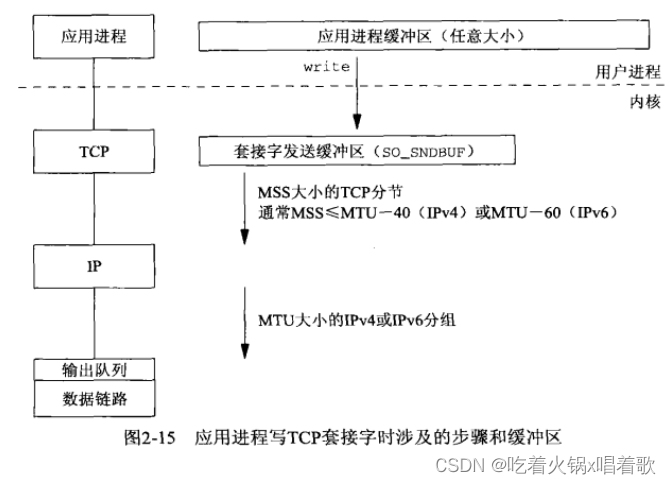
每个TCP套接字都有一个发送缓冲区，我们可以用套接字选项SO_SNDBUF来更改该缓冲区大小。当应用调用write时，内核从该应用的缓冲区中复制所有数据到所写套接字的发送缓冲区。如果该套接字的发送缓冲区容不下该应用进程的所有数据，该应用将被投入睡眠，这里假设了该套接字是阻塞的，它是通常的默认设置。内核将不从write系统调用返回，直到应用进程缓冲区中的所有数据都复制到套接字发送缓冲区。因此从写一个套接字的write调用成功返回仅仅表示我们可以重新使用原来的应用进程缓冲区，不代表对端TCP或应用已接收到数据。
发送端TCP提取套接字缓冲区中的数据并把它发送给对端TCP，对端TCP必须确认收到的数据，收到对端的ACK后，本端TCP才能从套接字发送缓冲区丢弃已确认的数据，因为TCP必须为已发送的数据保留一个副本，直到它被对端确认为止。
发送端TCP以MSS大小或更小的块把数据传递给IP，同时给每个数据块安上一个TCP首部以构成TCP分节，其中MSS或是对端通告的值，或是536（对端未发送MSS选项时，536是IPv4最小重组缓冲区字节数576减去20字节IPv4首部和20字节TCP首部的结果）。IP给每个TCP分节安上一个IP首部以构成IP数据报，并按照其目的IP地址查找路由表确定外出接口，然后把数据报传递给相应的数据链路。IP可能在把数据报传递给数据链路前将其分片，但之前说过MSS选项的目的之一就是试图避免分片，因此发送端没有意外的情况下IP不会在把数据报传递给链路层时进行分片，并且较新的实现还使用了路径MTU发现功能（可能会导致MSS比外出接口的MTU更小，从而更不可能导致发送端IP把数据报传递给链路层时分片）。每个数据链路都有一个输出队列，如果该队列已满，则新到的分组将被丢弃，并沿协议栈向上返回一个错误，TCP将注意到此错误，并在以后重传相应分节，应用并不知道这种暂时的情况。
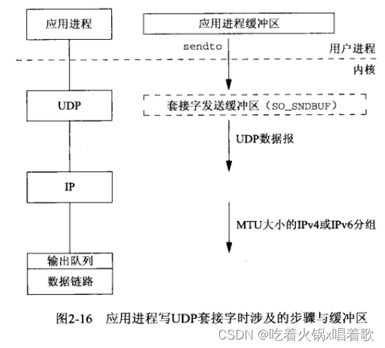
如上图，用虚线展示套接字发送缓冲区，因为它实际上并不存在。任何UDP套接字都有发送缓冲区大小，可用套接字选项SO_SNDBUF更改它，但它仅仅是可以写到该套接字的UDP数据报的大小上限，如果应用进程写一个大于套接字发送缓冲区大小的数据报，内核将返回该进程一个EMSGSIZE错误。既然UDP是不可靠的，它不必保存应用进程数据的副本，因此无需一个真正的发送缓冲区。应用进程的数据在沿协议栈向下传递时，通常被复制到某种格式的一个内核缓冲区中，当该数据被发送后，这个副本就被数据链路层丢弃了。
发送端UDP简单地给来自用户的数据报安上它的8字节首部以构成UDP数据报，然后传递给IP，IPv4或IPv6给数据报安上相应IP首部以构成IP数据报，然后执行路由操作确定外出接口，然后或者直接把数据报加入数据链路层输出队列（如果MTU合适），或者分片后再把每个片段加入数据链路层的输出队列。如果某个UDP应用进程发送大数据报（如2000字节的数据报），那么相比TCP应用更可能被IP分片，因为TCP会把应用数据划分成MSS大小的块。
从写一个UDP套接字的write调用成功返回表示所写的数据报或其所有片段已被加入数据链路层的输出队列，如果该队列没有足够空间存放该数据报或它的某个片段，内核通常会返回一个ENOBUFS错误给它的应用进程，但有些UDP实现不返回这种错误，这样数据报未经发送就被丢弃的情况应用也不知道。
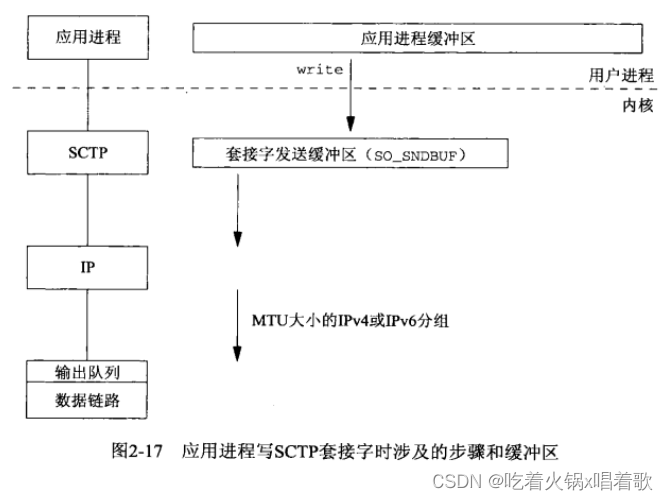
SCTP是与TCP类似的可靠协议，因此它的套接字也有一个发送缓冲区，而且也可以用套接字选项SO_SNDBUF更改这个缓冲区大小。当一个应用进程调用write时，内核从该应用的缓冲区中复制所有数据到所写套接字的发送缓冲区。如果该套接字的发送缓冲区容不下该应用进程的所有数据，应用进程将被投入睡眠，这里假设该套接字是阻塞的，它是通常的默认设置。内核直到应用进程缓冲区中的所有数据都复制到套接字缓冲区才从write函数返回。因此从写一个SCTP套接字的write调用成功返回仅表示我们可以重新使用原来的应用进程缓冲区，不表明对端SCTP或应用进程已接收到数据。
发送端SCTP发送完数据后，必须等待SACK，在累计确认点超过已发送的数据后，才可以从套接字缓冲区中删除该数据。
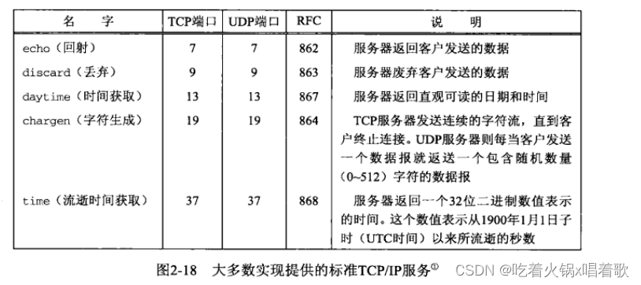
上图是TCP/IP多数实现都提供的服务，表中所有服务同时使用TCP和UDP，且这两个协议所用端口号也相同。
以上服务通常由Unix主机的inetd守护进程提供，可用telnet程序访问以上服务：
上例中，我们键入了主机名和服务名，这些服务名通过/etc/services文件映射到对应端口号。
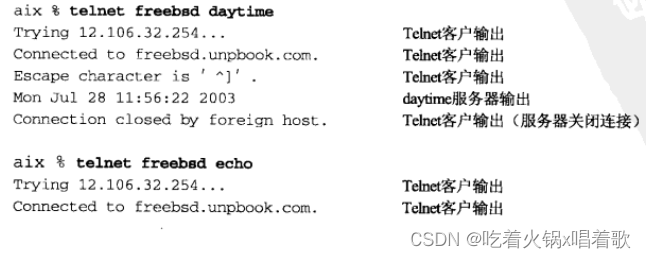
上例中连接到daytime服务器时是服务器执行主动关闭，而连接到echo服务器时是客户执行主动关闭。主动关闭的一方会进入TIME_WAIT状态。
上例中，当输出Trying IP…时，gethostbyname函数已返回了域名对应的IP地址，客户在此之前的停顿是解析器用于查找主机名的时间。输出Connected to host时意味着connect函数已返回，这两行输出间的停顿是connect函数用来建立连接的时间。
为了应对针对以上服务的拒绝服务攻击和其他资源使用攻击，如今的系统中，这些简单的服务通常被禁用。
常见因特网应用使用的协议：
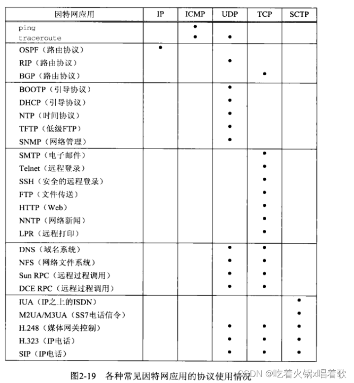
ping和traceroute是使用ICMP协议实现的网络诊断应用。traceroute自行构造UDP分组来发送并读取所引发的ICMP应答。路由协议OSPF通过原始套接字直接使用IP，RIP使用UDP，BGP使用TCP。
TIME_WAIT状态是为了实现TCP的全双工连接终止（处理最终那个ACK丢失的情形），并允许老的重复分节从网络中消逝。IP协议版本1~3未曾分配。版本5是网际网流协议，由Apple、NEXT和SunMicroystems为试验流式语音和视频而创建。RFC可通过电子邮件、匿名FTP、Web（https://www.rfc-editor.org/rfc/）免费获取。如果TCP一端没有收到对端的MSS选项，默认MSS值取536字节大小，因为IPv4的最小重组缓冲区大小是576字节，减去20字节的TCP首部和20字节的IP首部，就是536字节。在一个以太网上的主机和一个令牌环网上的主机之间建立一个连接，其中以太网上主机的TCP通告的MSS为1460，令牌环网上主机的TCP通告的MSS为4096，两个主机都没有实现路径MTU发现功能，对于令牌环网上的主机来说，不能发送超过1460字节的数据，因为它接收到的MSS是1460，对于以太网上的主机来说，可以发送4096字节的数据，但为了避免分片，它不会超过其外出接口的MTU（即以太网的1460）。
IPv4首部有一个协议字段，对于直接使用IP层的OSPF，该字段值为IANA注册的OSPF协议号，值为89。
SCTP发送端必须等待累计确认点已经超过已发送的数据，才能从套接字缓冲区中释放该数据，假设某个选择性确认（SACK）表明累计确认点之后的数据得到了确认，这样的数据不能被释放，因为选择性确认只是表明由选择性确认消息反映的序列号所涵盖的数据已被接收，而累计确认表明由累计确认消息中的序列号指示的所有该序列号以前的数据都已被接收。